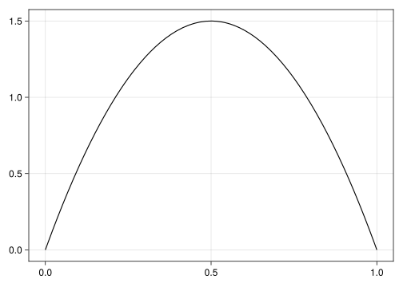

using DistributionsBayesian inference for a sequence of coinflips
About this tutorial
This is a tutorial on how to use the LogDensityProblems.jl ecosystem for Bayesian inference. Compared to other packages, such as Turing.jl, this approach is a bit more low-level, with the upside of being more hackable and insightful for learning.
Setup
For this exercise, we’re interested in performing inference on a simple process where a possibly biased coin is flipped \(N=100\) times. More formally, we could state this like so:
\[ y_i \sim \mathrm{Bernoulli}(p) \textrm{ for } i = 1,2,...100 \]
We start by simulating data from a Bernoulli distribution with the probability of heads set to \(p = 0.7\), which for the inverse problem is going to be the unknown quantity of interest to be inferred from observed data.
N = 100
p = 0.7
d = Bernoulli(p)
data = rand(d, N);Model definition
Having simulated data for inference, we now proceed to the model definition using the LogDensityProblems interface package. As we assume that the individual coinflips are independent from one another, the exact sequence of flips is irrelevant and we just need to store the total number of flips, \(N\), and the number of heads, which we call \(y\). We store this information in a struct called CoinflipProblem, for which we also create a constructor that extracts the necessary information from a sequence of flips.
struct CoinflipProblem
N::Int
y::Int
end
function CoinflipProblem(data::AbstractVector{Bool})
N, y = length(data), sum(data)
CoinflipProblem(N, y)
end;We now make our problem struct callable on an input parameter \(\theta\) at which to evaluate the (unnormalized) log joint probability density of the posterior distribution. Next to the likelihood function which makes use of the information from the data, we also need to specify a prior distribution for the unknown quantities. Here, we’re going to be broadly skeptical of extremely biased coins and use a \(Beta(2,2)\) prior:
using CairoMakie
plot(Beta(2,2))
function (problem::CoinflipProblem)(θ)
(; N, y) = problem
(; p) = θ
logprior = logpdf(Beta(2,2), p)
loglikelihood = logpdf(Binomial(N, p), y)
logprior + loglikelihood
end We can now instantiate our problem on the data and evaluate the joint logdensity of a fair coinflip with \(p = 0.5\):
problem = CoinflipProblem(data)
problem((; p=0.5))-25.568084137886768Model estimation
Having defined a way to evaluate the posterior density for a given parameter value, we now proceed to set up a sampling-based numeric estimation procedure via Hamiltonian Monte Carlo (HMC) using the LogDensityProblems suite of packages. HMC operates on the unconstrained reals but our parameter \(p\) is confined to the unit interval \((0,1)\) so we need an appropriate transformation, which is conveniently available in the TransformedLogDensity package. HMC furthermore requires the gradient of the posterior density, which we get with an automatic differentiation package, in this case ForwardDiff.
using LogDensityProblems
using TransformVariables, TransformedLogDensities
using LogDensityProblemsAD, ForwardDiff
transformation = as((p=as_unit_interval,))
tran = TransformedLogDensity(transformation, problem)
grad = ADgradient(:ForwardDiff, tran)ForwardDiff AD wrapper for TransformedLogDensity of dimension 1, w/ chunk size 1We can now evaluate the logdensity and its gradient:
LogDensityProblems.logdensity_and_gradient(grad, zeros(1))(-26.95437849900666, [33.0])With this in place, we can now draw a large number of samples (say, \(S=2000\)) from the posterior distribution using the HMC implementation in DynamicHMC as an approximation. We use the ThreadsX package to sample \(k\) chains in parallel:
using Random
using DynamicHMC
using ThreadsX
function sample(grad, S, k; rng=Random.default_rng())
ThreadsX.map(1:k) do _
mcmc_with_warmup(rng, grad, S; reporter=NoProgressReport())
end
end
result = sample(grad, 2000, 4)4-element Vector{NamedTuple{(:posterior_matrix, :tree_statistics, :κ, :ϵ), Tuple{Matrix{Float64}, Vector{DynamicHMC.TreeStatisticsNUTS}, GaussianKineticEnergy{LinearAlgebra.Diagonal{Float64, Vector{Float64}}, LinearAlgebra.Diagonal{Float64, Vector{Float64}}}, Float64}}}:
(posterior_matrix = [1.030936584561301 1.030936584561301 … 1.3543043858776358 1.657320047482527], tree_statistics = [DynamicHMC.TreeStatisticsNUTS(-7.1709040787843055, 1, turning at positions 0:1, 1.0, 1, DynamicHMC.Directions(0x280803fd)), DynamicHMC.TreeStatisticsNUTS(-7.265998245252861, 1, turning at positions 0:1, 0.7235906126898173, 1, DynamicHMC.Directions(0x504ad6f9)), DynamicHMC.TreeStatisticsNUTS(-6.097991534827894, 1, turning at positions 2:3, 0.9908277728513358, 3, DynamicHMC.Directions(0xb9569f9f)), DynamicHMC.TreeStatisticsNUTS(-4.330151081230633, 1, turning at positions 1:2, 0.9977211366465677, 3, DynamicHMC.Directions(0x3941e04a)), DynamicHMC.TreeStatisticsNUTS(-4.327913458187869, 1, turning at positions -1:0, 1.0, 1, DynamicHMC.Directions(0xc8f26cd6)), DynamicHMC.TreeStatisticsNUTS(-6.133875458234772, 2, turning at positions -3:0, 0.7455381214179532, 3, DynamicHMC.Directions(0xc72049ac)), DynamicHMC.TreeStatisticsNUTS(-4.773156821694306, 1, turning at positions -2:-3, 0.9946599810312423, 3, DynamicHMC.Directions(0xf5bcc5d8)), DynamicHMC.TreeStatisticsNUTS(-4.355685261874644, 2, turning at positions -3:0, 0.9956855909075178, 3, DynamicHMC.Directions(0x6fefba58)), DynamicHMC.TreeStatisticsNUTS(-4.4452915280823495, 1, turning at positions -1:-2, 0.9804012497468352, 3, DynamicHMC.Directions(0xc87b5985)), DynamicHMC.TreeStatisticsNUTS(-4.569687556168615, 1, turning at positions -2:-3, 0.9813748841959608, 3, DynamicHMC.Directions(0x8a62e664)) … DynamicHMC.TreeStatisticsNUTS(-5.40195711500012, 1, turning at positions 2:3, 0.9811286401951369, 3, DynamicHMC.Directions(0xf6d7dd07)), DynamicHMC.TreeStatisticsNUTS(-4.555290177134903, 1, turning at positions 0:1, 0.9989025978144257, 1, DynamicHMC.Directions(0x357cff43)), DynamicHMC.TreeStatisticsNUTS(-4.810374467317887, 1, turning at positions -1:-2, 0.97127578087709, 3, DynamicHMC.Directions(0x8b6cb679)), DynamicHMC.TreeStatisticsNUTS(-4.790490043676792, 2, turning at positions -4:-5, 0.9386609883188918, 7, DynamicHMC.Directions(0xfc1f7372)), DynamicHMC.TreeStatisticsNUTS(-4.73561763038363, 1, turning at positions -1:0, 0.9505702747027293, 1, DynamicHMC.Directions(0x55a129de)), DynamicHMC.TreeStatisticsNUTS(-4.771669594043197, 1, turning at positions 0:1, 1.0, 1, DynamicHMC.Directions(0x018139c5)), DynamicHMC.TreeStatisticsNUTS(-5.086488757513873, 1, turning at positions 1:2, 0.9616770992264235, 3, DynamicHMC.Directions(0x172d0e6e)), DynamicHMC.TreeStatisticsNUTS(-5.069371599526579, 2, turning at positions 4:5, 0.8982154699929872, 7, DynamicHMC.Directions(0xc1eeb3cd)), DynamicHMC.TreeStatisticsNUTS(-5.119519486655859, 1, turning at positions 1:2, 0.9481522722296782, 3, DynamicHMC.Directions(0x1c4a44ca)), DynamicHMC.TreeStatisticsNUTS(-4.969914367454172, 2, turning at positions -5:-6, 0.9213807415373182, 7, DynamicHMC.Directions(0xa85a7131))], κ = Gaussian kinetic energy (Diagonal), √diag(M⁻¹): [0.2333797843774525], ϵ = 1.0388396323312958)
(posterior_matrix = [1.9287168474133112 1.637162403496884 … 1.7014772829501412 1.7941011035362078], tree_statistics = [DynamicHMC.TreeStatisticsNUTS(-7.507191312454472, 2, turning at positions -3:0, 0.5905464373297632, 3, DynamicHMC.Directions(0x37fd6fe4)), DynamicHMC.TreeStatisticsNUTS(-5.523711704678568, 1, turning at positions -2:-3, 0.9782546716892205, 3, DynamicHMC.Directions(0x91fa64e8)), DynamicHMC.TreeStatisticsNUTS(-4.751353180472072, 2, turning at positions -3:0, 0.9668088995942062, 3, DynamicHMC.Directions(0xd142a208)), DynamicHMC.TreeStatisticsNUTS(-4.381403867094634, 1, turning at positions -2:-3, 0.9950785987774396, 3, DynamicHMC.Directions(0x8598a4ec)), DynamicHMC.TreeStatisticsNUTS(-5.175137213521009, 1, turning at positions -1:-2, 0.8616243648369949, 3, DynamicHMC.Directions(0x7d773b61)), DynamicHMC.TreeStatisticsNUTS(-4.8666280613461925, 1, turning at positions 0:1, 1.0, 1, DynamicHMC.Directions(0x89faac09)), DynamicHMC.TreeStatisticsNUTS(-5.196755269385257, 1, turning at positions -1:0, 0.8146049111042047, 1, DynamicHMC.Directions(0x6232015c)), DynamicHMC.TreeStatisticsNUTS(-4.72402979596968, 1, turning at positions -1:0, 0.9889257060804378, 1, DynamicHMC.Directions(0xccd10ee2)), DynamicHMC.TreeStatisticsNUTS(-5.127982998405981, 1, turning at positions -2:-3, 0.932828562993559, 3, DynamicHMC.Directions(0x12c84588)), DynamicHMC.TreeStatisticsNUTS(-4.4559433925291385, 1, turning at positions 2:3, 0.9981775901011752, 3, DynamicHMC.Directions(0xef897a8b)) … DynamicHMC.TreeStatisticsNUTS(-6.239922188177072, 2, turning at positions -1:2, 0.9868956356364138, 3, DynamicHMC.Directions(0xee5d485a)), DynamicHMC.TreeStatisticsNUTS(-4.573309399318821, 1, turning at positions -2:-3, 0.9953554172005462, 3, DynamicHMC.Directions(0xae0eea8c)), DynamicHMC.TreeStatisticsNUTS(-4.4101964556672995, 1, turning at positions -1:-2, 0.9790204218040853, 3, DynamicHMC.Directions(0x091240cd)), DynamicHMC.TreeStatisticsNUTS(-5.199575921896827, 1, turning at positions -1:-2, 0.8511705312222763, 3, DynamicHMC.Directions(0xdb8c58f9)), DynamicHMC.TreeStatisticsNUTS(-5.061154093871904, 2, turning at positions -1:2, 0.9999999999999999, 3, DynamicHMC.Directions(0xcf48eaf6)), DynamicHMC.TreeStatisticsNUTS(-5.058124387102987, 1, turning at positions -2:-3, 0.9629202124313118, 3, DynamicHMC.Directions(0x6e882dc8)), DynamicHMC.TreeStatisticsNUTS(-4.441533943869671, 2, turning at positions 5:6, 0.9898757312636689, 7, DynamicHMC.Directions(0x9919c276)), DynamicHMC.TreeStatisticsNUTS(-4.7190780593386785, 1, turning at positions -1:0, 0.9334181663449153, 1, DynamicHMC.Directions(0x589281de)), DynamicHMC.TreeStatisticsNUTS(-5.619643645641158, 1, turning at positions -2:-3, 0.8709531811368773, 3, DynamicHMC.Directions(0x10512bc8)), DynamicHMC.TreeStatisticsNUTS(-4.958876329063581, 2, turning at positions -2:1, 0.9794807760376472, 3, DynamicHMC.Directions(0xfbb8ce9d))], κ = Gaussian kinetic energy (Diagonal), √diag(M⁻¹): [0.24894909109426672], ϵ = 0.9676087796725896)
(posterior_matrix = [1.6373017016372868 1.7291571586634633 … 1.1566493174493064 1.8515034241119055], tree_statistics = [DynamicHMC.TreeStatisticsNUTS(-4.5390978494633645, 2, turning at positions 0:3, 0.9811498987850773, 3, DynamicHMC.Directions(0xc6a5bdff)), DynamicHMC.TreeStatisticsNUTS(-4.932398649078413, 2, turning at positions 0:3, 0.955117556162926, 3, DynamicHMC.Directions(0x2e9ddcfb)), DynamicHMC.TreeStatisticsNUTS(-4.823331299972709, 1, turning at positions 0:1, 0.989740101674295, 1, DynamicHMC.Directions(0x125bacf5)), DynamicHMC.TreeStatisticsNUTS(-4.981054511181943, 1, turning at positions -1:0, 0.9701587943995985, 1, DynamicHMC.Directions(0xc9c9093e)), DynamicHMC.TreeStatisticsNUTS(-5.620248174790996, 1, turning at positions -1:-2, 0.9419921416294613, 3, DynamicHMC.Directions(0xf89f8865)), DynamicHMC.TreeStatisticsNUTS(-4.403842559522155, 1, turning at positions -1:0, 1.0, 1, DynamicHMC.Directions(0x80fa037c)), DynamicHMC.TreeStatisticsNUTS(-4.5563467146503545, 1, turning at positions -2:-3, 0.9724792665430337, 3, DynamicHMC.Directions(0x5eb978f8)), DynamicHMC.TreeStatisticsNUTS(-5.268093462288715, 1, turning at positions 1:2, 0.886045799111904, 3, DynamicHMC.Directions(0xd9ed324e)), DynamicHMC.TreeStatisticsNUTS(-4.694021744214775, 1, turning at positions -1:0, 1.0, 1, DynamicHMC.Directions(0x25bce1b2)), DynamicHMC.TreeStatisticsNUTS(-4.530658500059982, 1, turning at positions 0:1, 0.9908429439606528, 1, DynamicHMC.Directions(0x32572193)) … DynamicHMC.TreeStatisticsNUTS(-5.707267292760845, 1, turning at positions 1:2, 0.8512363038990749, 3, DynamicHMC.Directions(0x1769ac4a)), DynamicHMC.TreeStatisticsNUTS(-5.3620948116579426, 2, turning at positions 3:4, 0.9955185037148491, 7, DynamicHMC.Directions(0x6792611c)), DynamicHMC.TreeStatisticsNUTS(-4.489068871958231, 1, turning at positions -1:0, 1.0, 1, DynamicHMC.Directions(0x431765fc)), DynamicHMC.TreeStatisticsNUTS(-4.423450106100652, 2, turning at positions -3:-4, 0.9999999999999999, 7, DynamicHMC.Directions(0xbbd4c66b)), DynamicHMC.TreeStatisticsNUTS(-4.388923101043756, 2, turning at positions 0:3, 0.9953780999787938, 3, DynamicHMC.Directions(0x63e442e7)), DynamicHMC.TreeStatisticsNUTS(-4.350995920009651, 1, turning at positions 1:2, 0.9956997837262359, 3, DynamicHMC.Directions(0x74d95382)), DynamicHMC.TreeStatisticsNUTS(-7.869286971834822, 2, turning at positions 0:3, 0.718795182294634, 3, DynamicHMC.Directions(0xbebbaf9f)), DynamicHMC.TreeStatisticsNUTS(-6.8620727737683955, 1, turning at positions -1:0, 1.0, 1, DynamicHMC.Directions(0x972e2cee)), DynamicHMC.TreeStatisticsNUTS(-5.569647188931652, 1, turning at positions 0:1, 1.0, 1, DynamicHMC.Directions(0xe8407e39)), DynamicHMC.TreeStatisticsNUTS(-5.2549505289997205, 2, turning at positions 6:7, 0.9999999999999999, 7, DynamicHMC.Directions(0xa25811ff))], κ = Gaussian kinetic energy (Diagonal), √diag(M⁻¹): [0.2501987970043607], ϵ = 0.9239875369191554)
(posterior_matrix = [1.5780096569763669 1.7109475298301067 … 1.7535883128577197 1.2149948495113707], tree_statistics = [DynamicHMC.TreeStatisticsNUTS(-4.953167711232363, 2, turning at positions -1:2, 0.8691629279915682, 3, DynamicHMC.Directions(0x1a8ea7fa)), DynamicHMC.TreeStatisticsNUTS(-4.652075667653158, 1, turning at positions 0:1, 0.9024334708390653, 1, DynamicHMC.Directions(0xa622fb67)), DynamicHMC.TreeStatisticsNUTS(-4.659948998512325, 1, turning at positions 0:1, 1.0, 1, DynamicHMC.Directions(0x3d351edf)), DynamicHMC.TreeStatisticsNUTS(-5.549647964900297, 1, turning at positions 1:2, 0.749225848381661, 3, DynamicHMC.Directions(0x5e63e38a)), DynamicHMC.TreeStatisticsNUTS(-5.417668955623986, 1, turning at positions 0:1, 0.6481463590433322, 1, DynamicHMC.Directions(0x24167dc5)), DynamicHMC.TreeStatisticsNUTS(-4.575538676115587, 1, turning at positions 0:1, 1.0, 1, DynamicHMC.Directions(0x98573b7f)), DynamicHMC.TreeStatisticsNUTS(-5.2617570471661015, 1, turning at positions -1:0, 0.7787285066453431, 1, DynamicHMC.Directions(0x15ab2af6)), DynamicHMC.TreeStatisticsNUTS(-6.28960097905008, 1, turning at positions 0:1, 0.7787087280819874, 1, DynamicHMC.Directions(0x7ae8142f)), DynamicHMC.TreeStatisticsNUTS(-5.920592283932756, 2, turning at positions 0:3, 0.8733275822533036, 3, DynamicHMC.Directions(0x64251633)), DynamicHMC.TreeStatisticsNUTS(-4.32513694482349, 2, turning at positions -3:0, 0.999107719308363, 3, DynamicHMC.Directions(0xfcd8c170)) … DynamicHMC.TreeStatisticsNUTS(-4.541224083693624, 1, turning at positions 1:2, 0.9497832401716063, 3, DynamicHMC.Directions(0xd5b8dca6)), DynamicHMC.TreeStatisticsNUTS(-5.318887361137377, 1, turning at positions -1:0, 0.7179526383073025, 1, DynamicHMC.Directions(0xaa85ffb6)), DynamicHMC.TreeStatisticsNUTS(-4.915806849665774, 1, turning at positions 0:1, 1.0, 1, DynamicHMC.Directions(0x96bb331b)), DynamicHMC.TreeStatisticsNUTS(-4.399319923888786, 1, turning at positions -1:0, 1.0, 1, DynamicHMC.Directions(0xa829d3fe)), DynamicHMC.TreeStatisticsNUTS(-4.723887125224913, 2, turning at positions 0:3, 0.9148166356746814, 3, DynamicHMC.Directions(0x5a169b5b)), DynamicHMC.TreeStatisticsNUTS(-4.4819874887185875, 1, turning at positions -2:-3, 0.9999999999999999, 3, DynamicHMC.Directions(0xf04e14fc)), DynamicHMC.TreeStatisticsNUTS(-4.345780672336883, 1, turning at positions -1:0, 0.9929464367293236, 1, DynamicHMC.Directions(0x30835258)), DynamicHMC.TreeStatisticsNUTS(-7.345590599669931, 1, turning at positions 1:2, 0.2501869023671719, 3, DynamicHMC.Directions(0x000616a2)), DynamicHMC.TreeStatisticsNUTS(-5.045013734266418, 2, turning at positions 0:3, 0.8528117995036273, 3, DynamicHMC.Directions(0x57d84197)), DynamicHMC.TreeStatisticsNUTS(-4.977506899218776, 2, turning at positions -3:0, 0.9725802994291745, 3, DynamicHMC.Directions(0x705761e0))], κ = Gaussian kinetic energy (Diagonal), √diag(M⁻¹): [0.25489783920487363], ϵ = 1.2416082221140592)The result is a vector of length \(k\), each element of which contains for each chain the posterior samples as well as some statistics about the sampling procedure, which can be used to check if everything went as planned.
Model checking
Having obtained samples from the posterior distribution, we’re in principle ready to use our model for inference, i.e., answer the question of whether our coin is biased and by how much, and how certain we can be of the answer based on the data we have seen.
However, before we jump to inference, it is good practice to perform some model checks: Our estimates rely on a numerical sampling scheme, which can fail rendering the results unreliable.
using MCMCDiagnosticTools
using DynamicHMC.DiagnosticsFirst, we chan check the effective sample size (ess). In Markov chain monte carlo (MCMC) approaches, samples are often correlated, meaning that the total number of ‘effective’ samples is less than obtained by an uncorrelated sampling procedure.
ess, Rhat = ess_rhat(stack_posterior_matrices(result))([2945.413525178413], [1.000856833317204])summarize_tree_statistics.(getfield.(result, :tree_statistics))4-element Vector{DynamicHMC.Diagnostics.TreeStatisticsSummary{Float64, NamedTuple{(:max_depth, :divergence, :turning), Tuple{Int64, Int64, Int64}}}}:
Hamiltonian Monte Carlo sample of length 2000
acceptance rate mean: 0.93, 5/25/50/75/95%: 0.7 0.9 0.97 1.0 1.0
termination: divergence => 0%, max_depth => 0%, turning => 100%
depth: 0 => 0%, 1 => 62%, 2 => 38%
Hamiltonian Monte Carlo sample of length 2000
acceptance rate mean: 0.93, 5/25/50/75/95%: 0.74 0.91 0.97 1.0 1.0
termination: divergence => 0%, max_depth => 0%, turning => 100%
depth: 0 => 0%, 1 => 62%, 2 => 38%
Hamiltonian Monte Carlo sample of length 2000
acceptance rate mean: 0.94, 5/25/50/75/95%: 0.77 0.92 0.97 1.0 1.0
termination: divergence => 0%, max_depth => 0%, turning => 100%
depth: 0 => 0%, 1 => 60%, 2 => 40%
Hamiltonian Monte Carlo sample of length 2000
acceptance rate mean: 0.87, 5/25/50/75/95%: 0.45 0.8 0.95 1.0 1.0
termination: divergence => 0%, max_depth => 0%, turning => 100%
depth: 0 => 0%, 1 => 56%, 2 => 44%Model inference
using StructArrays
function posterior(result)
samples = eachcol(pool_posterior_matrices(result))
StructArray(transform.(transformation, samples))
end
post = posterior(result);function summarize(post)
m, s = round.((mean(post.p), std(post.p)); digits=2)
println("posterior mean: ", m)
println("posterior sd: ", s)
end
summarize(post)posterior mean: 0.82
posterior sd: 0.04function plot_inferred_vs_true(post, p_true)
fig = Figure(); ax = Axis(fig[1,1])
density!(ax, post.p; color=:grey20)
vlines!(ax, p_true; linewidth=2)
fig
end
plot_inferred_vs_true(post, p)